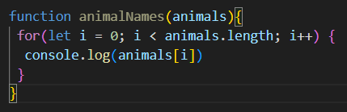
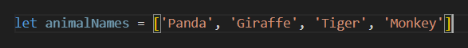
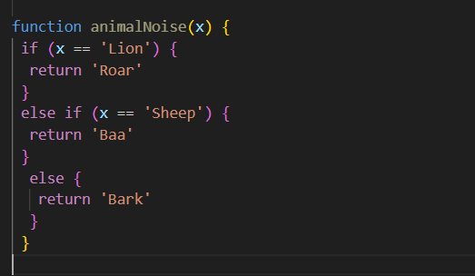

Javascript is a challenging language that involves math. Or more specifically, giving directions to use math and variables. It's like giving instructions on how to build a cabinet including how to measure and cut the planks of wood.
An analogy I would use to describe Javascripts relationship with HTML and CSS, I'd say imagine it like a cake. HTML woukld be the base sponge cake, CSS wold be the buttercream and decorative fruit, and Javascript would be the utensils. Like a piping bag and spatula that controls were to apply the cream nicely to the cake
Control flow is the computer going through code from top to bottom, like the steps of making an omelette.
An example of how Loops work would perhaps be riding a bicicle, the wheels are turning in cirles but keeps going in a certain direction it is turned to.
DOM is a document of all th html and css and working together and they can be accessed and edited using javascript. Like looking through a library and everything is their own section and lined alphabetically, ready to be taken out.
Objects define a variable and are given mesurable information and are accessed using "." or "[]"
Arrays store a list of items in a variable and it is accessed by typing the array with a [*insert number in the list of items*]
Functions are a big chunk of code and it's useful because they can be commanded to do its job instead of running constantly, it can work in specific areas or times.
